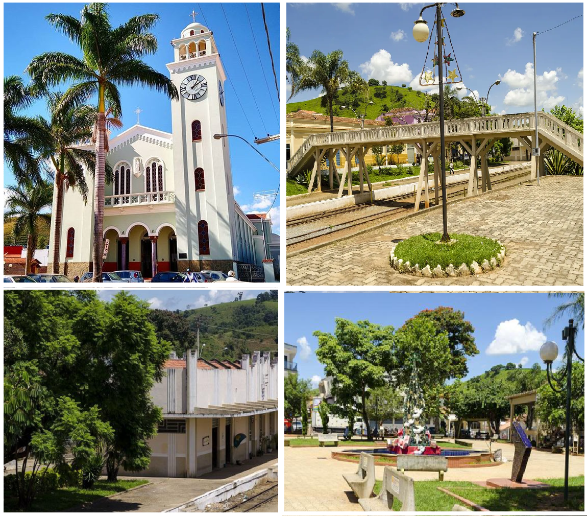

CIDADE DE ITANHANDU

SOBRE A CIDADE DE ITANHANDU
De acordo com o censo realizado pelo Instituto Brasileiro de Geografia e Estatística em 2010, sua população é de 14 183 habitantes. Sua área é de 143,938 quilômetros quadrados.
Em 1911, o local foi elevado a distrito, pertencente a Pouso Alto. E, em 1923, criou-se o município de Itanhandu, que quer dizer, em língua tupi, "ema de pedra", através da junção dos termos itá ("pedra") e nhandu ("ema").
A cultura na cidade tem seu ponto alto no carnaval,que atrai turistas e carnavalescos de todos os lugares do país .
Entre os atrativos naturais, encontra-se, a vinte quilômetros da cidade, a nascente do Rio Verde, no alto da Serra da Mantiqueira, com matas virgens, clima puro e belas paisagens.
Fonte: https://pt.wikipedia.org/wiki/Itanhandu
| LOCALIDADES ---- | DISTANCIA EM KM |
| SP --------------------- | 224 km |
| BH --------------------- | 294 km |
| RJ --------------------- | 189 km |
T U R I S M O
